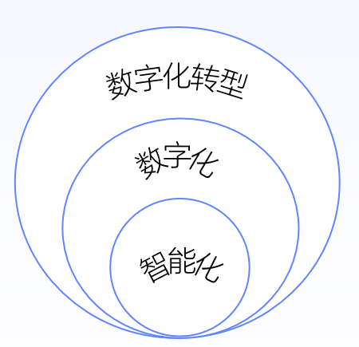
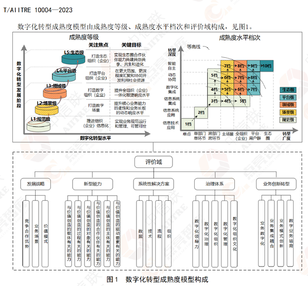
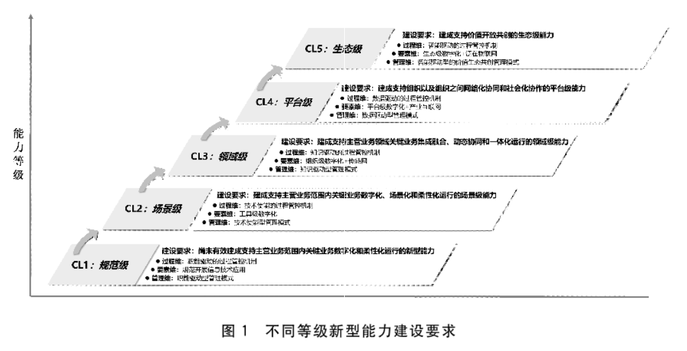

一、数字化、数智化，有何异同？
在提到数字化的时候，我们总是为问数字化与信息化有什么区别，同样在提数智化的时候，更会发出同样的灵魂拷问：数智化与信息化、数字化有什么区别？
区别
信息化：业务在线，将线下业务搬到线上，数据只是业务的副产品。比如企业物料管理系统，车管所检验流程信息化。一般体现在传统实体企业。信息化是工业革命3.0的核心内涵。
数字化：在线业务，业务原生发生在线上，比如互联网业务，但与电商类传统互联网业务不同的是，数字化是要融合数据与业务，数字化不止是实现业务功能，还需要赋能业务发展，应用数字化手段进行运营，创新业务模式，产生新的业务价值。比如滴滴打车，贝壳房产。有的人把数字化理解为将非数字化内容转化为数据形式，进行存储、访问和分析，这就太表面了，没有把信息化与数字化区分开。
数智化：更侧重于对数字化数据和信息进行分析和挖掘，从中获取见解、指导决策或创新业务模式。数智化是在数字化基础上的更进一步，它利用数字化的数据，并结合数据算法、人工智能、机器学习等技术来深入理解数据，发现模式、趋势，并做出更智能化的决策。
相同点
数据驱动性质：无论是数字化还是数智化，都与数据处理和分析相关。两者都以数据作为业务的核心驱动力，只不过数智化更强调数据的算法、智能方面。
技术引领作用：数字化和数智化都需要使用技术工具和平台，以新型数据基础设施为依托，以”云大物智链“等新兴技术为引领，推动工业革命4.0，促进产业升级。
增强业务效率：两者都旨在提高业务效率和创造新的价值。通过深入数据分析和洞察为业务决策提供支持，促进业务创新和增长。
关系


信息化当然是数字化与智能化的基础，所以不单列在这个关系图中。
数智化是数字化的一部分，可以简单理解为数字化+智能化，本质是数字化的特定场景与应用，是数字化程度更高级别的体现。
数字化转型是一个更大范围的概念。企业数字化转型是以数据为驱动，借助大数据、云计算等数字技术和数学算法，打通企业生产经营的各个环节，加强业务与技术融合，提升数字化运营水平，优化资源配置，实现管理升级和模式创新，从而达到降本增效的目的，不断推动企业高质量发展（来源：全国信息技术标准化技术委员会企业数字化转型白皮书）。
二、从数字化到数智化，还有多远？
任何事物的发展都会有一个演进过程，而要准确把握演进的状态需要有一个衡量标尺，这就是能力成熟度评估或能力等级划分标准。
比如软件能力成熟度模型CMMI，是由美国卡耐基梅隆大学软件工程研究所组织全世界的软件过程改进和软件开发管理方面的专家历时四年而开发出来的，并在全世界推广实施的一种软件能力成熟度评估标准，主要用于指导软件开发过程的改进和进行软件开发能力的评估，从低到高划分为一级初始级、二级可管理级、三级已定义级、四级量化管理级、五级优化管理级。
再比如公认的自动驾驶分级标准由SAE制定，自动驾驶技术分为L0-L5共六个等级。L0代表没有自动驾驶加入的传统人类驾驶，而L1-L5则随自动驾驶的技术配置进行了分级。
再比如，数据管理能力成熟度评估模型DCMM，是我国首个数据管理领域正式发布的国家标准。旨在帮助企业利用先进的数据管理理念和方法，建立和评价自身数据管理能力，持续完善数据管理组织、程序和制度，充分发挥数据在促进企业向信息化、数字化、智能化发展方面的价值。
它们都得到业界普遍认同，成为行业的度量标尺和企业能力提升的风向标。而反观数字化转型领域，目前从定义到评估模型不下10余种，从团标、国标到各公司发布的成熟度评估模型，各有侧重，又相互包含，没有统一，更没有受到广泛接受和普及。
《数字化转型成熟度模型》


依据团标T/AIITRE10004-2023给出的数字化转型发展阶段，分为规范级、场景级、领域级、平台级和生态级等五个等级。团标T/AIITRE10004-2023给出的数字化转型主要评价域，包括发展战略、新型能力、系统性解决方案、治理体系、业务创新转型5个域及其对应的22个子域。
《信息化与工业化整合管理体系新型能力分级要求》


虽然国标GB/T23006-2022参考了众多数字化转型团体标准，但最后确定的并不叫数字化转型能力，而提的是新型能力建设等级。
新型能力的建设是一项系统工程，组织应从过程维、要素维、管理维等三个维度系统开展新型能力建设、运行和优化，建立包含策划、支持、实施与运行、评测与改进的PDCA过程管控机制，涵盖数据、技术、流程、组织等四要素的系统性解决方案，以及涵盖数字化治理、组织机制、管理方式、组织文化等的治理体系，并以过程管控机制为牵引，推动过程管控机制、系统性解决方案、治理体系三者之间的协调联动与互动创新，持续建设新型能力。
新型能力的等级由低到高可分五个等级。在能力等级描述中的虽然又用了数字化、柔性化、智能化、生态化等相当抽象的词，但分别定义了不同等级的驱动模式，表明了该能力等级的核心驱动因素。
CL1(规范级)——职能驱动，指按照确定的组织分工和岗位职能职责标准化开展各项活动。
CL2（场景级）——技术使能，指通过基于各类技术融合应用形成的专业技能赋能各项活动专业化和柔性化开展。
CL3（领域级）——知识驱动，指通过构建主营业务领域专业知识模型及其数字化、网络化应用赋能各项活动智能化开展。
CL4（平台级）——数据驱动，指构建基于模块化、平台化数据模型的在线感知、实时分析、动态决策、精准执行体系，以大数据赋能各项活动大范围动态优化。
和CL5（生态级）——智能驱动，指构建基于自学习、自优化认知模型的智能感知、智能分析、智能决策和智能运行体系，以人工智能赋能各项活动按需自主开展。
从此能力等级已经依稀可以窥见从数字化到数智化的演进趋势和能力要求。数字化转型是一个永不停止的过程，没有终点，所以笔者认为并不存在从数字化到数智化的明确阶段划分，只能说在数字化建设过程中智能驱动的程度是否比昨天更高，信息化、数字化、数智化是交替前进，螺旋上升的过程。
总结
信息化是业务在线，数字化是在线业务，数智化是数字化+智能化。信息化是数字化的基础，数智化是数字化更高的形式，不论信息化、数字化还是数智化，都是数字化转型的内容。
实施数字化转型，或实施新型能力建设，是一个交替前进螺旋上升的过程，组织应该做好战略规划、实施跟踪，持续评估能力等级，基于PDCA模型不断迭代优化，那么离智能驱动的生态级水平也就不远了。
文章作者:\ DataEA